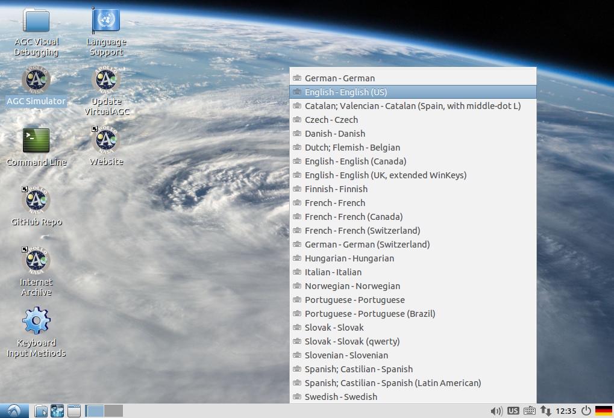
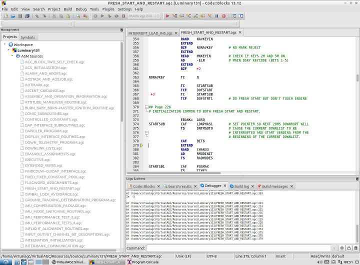

|
Current Versions of Virtual
AGC Downloads
|
Target Platform
|
Description
|
Download Version
|
Instructions
|
All platforms
|
Complete source code (Apps, AGC, and AEA)
|
Current at
GitHub |
Building from
source
|
Windows, Mac OS X, Linux, Solaris, or
FreeBSD (32- or 64-bit 'x86)
|
VirtualBox virtual machine (Apps, AGC
source code, and visual AGC debugging).
Since the VM is a rather substantial
download (~1GB), you normally wouldn't want to download it
very often, and instead would just update it with new
VirtualAGC software, as needed, after the initial
download. But sometimes the improvements to the VM
itself are substantial enough to justify re-downloading it
in its entirety, so here is a brief change history to let
you decide. Note that older versions of the VM are not
retained on this site, so only the latest one listed in
the change history is still available. Note also that a complete re-download of the VM
requires erasing the old VM, putting the downloaded one in
the same location as the old VM on your host machine.
- 2017-04-20:
- [Note: I recommend
installing a later version of the Midori browser, by
executing the following command from a command-line
in the VM: "sudo apt-add-repository ppa:midori/ppa
&& sudo apt-get update -qq && sudo
apt-get install midori".
You
will be prompted for a password, which is
"virtualagc".]
- Virtual disk size increased from 5GB
to 9GB, therefore, more actual disk space on the
host-system is required as well.
- Space reserved for a swap-partition,
though not enabled.
- Cut-and-paste between VM and host
machine is now enabled by default.
- Language support and keyboard-layout
for the VM added (beyond just U.S. English), with
desktop launcher icon for selecting among them.
- "Update VirtualAGC" launcher icon
added to desktop, for easy updates to the VirtualAGC
software.
- 2017-04-17 version of VirtualAGC
software.
- 2017-03-29:
- Added Code::Blocks visual-debugging
launchers for many more AGC versions.
- Eliminated the password entry
associated with the screen-saver.
- Default browser changed, for much
faster viewing of AGC program listings. [Note:
It turns out that there are oddities about the way
this browser, Midori, has been working, so I would
advise installing a newer version of it. From
within a command-line in the VM, execute the
following command: "sudo
apt-add-repository ppa:midori/ppa && sudo
apt-get update -qq && sudo apt-get install
midori". You
will be prompted for a password, which is
"virtualagc".]
- 2017-03-29 version of VirtualAGC
software.
- 2016-11-19:
- Initial version of VM.
- 2016-11-19 version of VirtualAGC
software.
|
2017-03-29,
1.2GB
(10GB uncompressed)
|
Using
the
VM
or
Updating the VM to
latest version of VirtualAGC (see next item)
|
Ubuntu 14.04 (32-bit 'x86)
|
App-installation tarball
|
2017-08-31,
26MB
(418MB uncompressed)
|
Using
Ubuntu installer |
Raspberry Pi (Raspbian-Jessie)
|
App-installation tarball
|
2017-08-31, 26MB
(418MB uncompressed)
|
Using
Raspbian tarball
|
Windows
|
App-installation tarball
|
2017-08-31,
27MB
(418MB uncompressed)
|
Using
Windows tarball
|
Contents
Introduction
This page covers various ways to download and/or install Virtual
AGC project software. Three methods are currently
recommended, and a fourth is possible if not really recommended:
- If you simply wish to run one of the provided AGC or
AEA simulations, examine the AGC or AEA program code, and/or do
visual debugging of (Block II) AGC code, then the easiest thing
to do is to download
and run the provided VirtualBox virtual machine. The
VM is guaranteed to work properly on any 32-bit or 64-bit 'x86
platform for which VirtualBox is available, namely Windows, Mac,
Linux, and Solaris, and (according
to
this page) FreeBSD as well even though the latter is not
obvious from the VirtualBox website.
- If you just happen to have a computer system which is
currently supported by an installation package, then you can simply download and
install the proper installation package. At present,
however, these platforms are only the following:
- Raspberry Pi
- Ubuntu 14.04 32-bit 'x86.
- Windows.
- If you wish to do not only the above, but also wish to delve
more deeply into the Virtual AGC project code (as opposed to
just the AGC/AEA code), then you should instead download the
Virtual AGC source code, and perhaps build it yourself.
This
works on many more platforms, though is more-involved to set up,
and visual AGC debugging may not be possible easily on platforms
other than 'x86 Windows, Mac, or Linux.
- If you are satisfied with older versions of Virtual
AGC, many additional computer platforms were once directly
supported with installer programs, which you can still find here or here. Ideally, we would
like to directly support all major platforms with Virtual AGC
installer programs, but in practice it is far too hard to do so
with the resources available at present, so this is no longer
being done currently.
Note that a lot of detail about known quirks on different
platforms, and about trouble-shooting, can be found at the older
links listed in approach #4 above, but isn't found on the present
page. That's because the information hasn't been updated in
so long that its reliability is dubious, and because many of the
platforms mentioned there are long-obsolete. It should also
be noted that the build-instructions for some platforms presented
here are similarly out-of-date and may need corrections.
Downloading, Running,
or Updating Virtual AGC in VirtualBox
Characteristics
of the Virtual AGC VM
My descriptions in this section relate to the 2017-04-20 version
of both the VM and the VirtualAGC software, so other versions may
be slightly different ... but this still gives the general idea.
The virtual-machine approach should work with any host system
supported by VirtualBox:
namely,
any 32-bit or 64-bit 'x86 version of Windows, Mac, Linux, Solaris,
or FreeBSD. The VM is nice because it lets you work with the
most-commonly-desired elements of Virtual AGC, while skipping past
the most-annoying and tricky setup steps, such as compiling
Virtual AGC's source code. It provides you with a "virtual
machine", with Virtual AGC and other things you need in order to
be able to work with Virtual AGC already pre-installed and
pre-configured. Though like anything else done to make our
lives "simpler", it brings its own (hopefully smaller!) set of
problems with it.
When the VM is run, the first thing you see is the VirtualAGC
GUI, from which you can run an AGC simulation using various
selectable options. There are actually two different
versions, and which you'll see depends on how large your (virtual)
display screen is: For screens smaller than 1200×1024 you'll
get the interface below left, whereas for larger screens you'll
get the one below right. Unfortunately, they don't resize if
you resize your virtual display screen, in which case you may
simply need to exit from the program and restart it. The two
interfaces have exactly the same capabilities, except the smaller,
left-hand one doesn't allow you to run "custom" AGC-software
versions:
You can do a number of things from this VirtualAGC GUI, such as
run the simulation (below left) or browse nicely
syntax-highlighted AGC source code (below right):
If you exit from the VirtualAGC GUI, you'll see the VM's bare
desktop, on which a number of other useful options appear:

The VM actually runs Ubuntu Linux, and if you're not an American,
you might want to configure language options or keyboard-layout
options. (Or you might not care about those things, since the
language options only affect the VM and not VirtualAGC, and you have
very little need to use the keyboard ... but still.) For VM
versions 2017-04-20 or later, the overall language selection is in
the desktop icon called "Language Support"; all languages supported
by Ubuntu are already loaded, so you don't need to download any new
ones, but you do need to select the one you want (if it's not U.S.
English). By the way, that's not what's depicted
above; what you see in the screenshot above is the keyboard-layout
selection list, which you can get by clicking the icon that looks
like a keyboard near the desktop's bottom right. There are
actually a lot more layouts available than what's shown, but to get
more of them, such as Arabic or Chinese or whatever, you need to use
the "Keyboard Input Methods" icon first, to add the layout you need
to this pop-up menu.
Some other very-useful icons you can see on this desktop are:
- "AGC Simulator" lets you rerun the VirtualAGC GUI if you've
exited from it.
- "GitHub Repo" lets you browse our GitHub source-code
repository.
- "Internet Archive" lets you browse our Internet Archive
document collection.
- "Website" lets you browse our main website.
- (2017-04-20 or later.) "Update VirtualAGC" lets you
download and install the latest version of the VirtualAGC GUI
program, and all of the associated simulation software, AGC
code, AGS code, and so on. Just double-click it, and then
answer the prompt with either YES or NO.
- "AGC Visual Debugging" allows you to work with the AGC source
code, and or run the AGC simulation, within a program called Code::Blocks. The
desktop icon is actually a folder containing separate launcher
icons for most of the AGC software versions available to us.
Code::Blocks is a popular Integrated Development Environment
(IDE). Within it, you can edit the AGC source code and
reassemble it ... but more importantly, you can visually debug
it: i.e., single-step through the AGC code, examine AGC variables,
and so forth, so that you can get a very intimate understanding of
how the AGC code works, if that's something that interests
you. For example, in the VM screenshot below, the Luminary 131
(Apollo 13 LM) code is being debugged, and the program is at line
379 (the EXTEND instruction) of the Fresh Start and
Restart section of the code.

Okay, enough of the sales pitch already! What's do you
actually have to do to install the thing?
Installation of the
Virtual AGC VM
It's hard to pin down exactly what computer resources you'll need
to run the VM. The minimum is probably around 2 GB of RAM
and 30GB of free disk space, but the more of everything you have,
the better. In particular, you will have a far more
satisfactory experience if your CPU has VT-x
(Intel) or AMD-V (AMD) extensions. The VM itself
requires only about 10GB of disk space, but in the process of
decompressing the downloaded VM, you'll temporarily need a lot
more (hence the 30GB mentioned).
Before doing anything with Virtual AGC as such, you should take
care of the following:
- If VirtualBox is not already installed, download and install
VirtualBox, using whatever version is suitable for your
computer system. The Virtual AGC virtual machine (VM) you
will download was created with VirtualBox
4.3.40, but it should work with later versions as
well. If you have a different version, you may find
yourself wanting to reinstall VirtualBox's "guest additions"; if
you do, remember that the username and password are both
"virtualagc".
- The VM is compressed in tar.xz form for downloading, so if
your operating system doesn't already have software support for
tar.xz archives, you need to install extra software that
provides it. In Linux, you're probably okay without doing
anything, or at worst just using your distribution's software
repository. For other platforms, a little googling reveals
that the program 7zip
provides these formats for Windows, and there are "unofficial"
installers for 7zip for Mac, Solaris, and FreeBSD.
However, various other programs work as well, I think, such as WinZip.
Then to actually install the VirtualAGC VM, you do the following.
- Download the current compressed VM, as listed at the top of
this page.
- Uncompress it, resulting in a folder called
"VirtualAGC-runtime". (This may or may not be a 2-step
process, in which a tar file is first created, which in turn
would need to be expanded to get the mentioned folder.)
The tar.xz/tar file(s) are no longer used after that and may be
deleted ... though obviously we'd prefer you retained it
for a while to make sure you don't need to download it again if
some mishap occurs. VirtualBox tends to store all of its
virtual machines in the same folder (on Linux, for example, that
folder is "~/VirtualBox VMs"), so although it's not necessary to
do so, you might want to move the VirtualAGC-runtime folder into
the corresponding "VirtualBox VMs" folder on your computer.
- In whatever file-system browser your computer has, descend
into the VirtualAGC-runtime folder, and double-click the mouse
on the file VirtualAGC-runtime.vbox. This makes VirtualBox
aware of your VM, and may or may not actually immediately run
it. At any rate, the VM will be visible in VirtualBox's
manager program, and you can run it from there.
In its as-downloaded form, the VM is typically configured to use
1GB of RAM and 2 CPU cores. You may be able dial these
settings down in VirtualBox, but you may need to scale your
expectations at the same time.
As I mentioned above, the username and password for the VM are
both "virtualagc". Since you are automatically logged in
whenever you run the VM, you don't normally need this information,
but it's good to know just in case (for example) you ever need to
install some new, non-Virtual-AGC software on it, or perform some
other administrative action.
Finally, technically, for any Linux pros, the VM does not have
any swap space. If that makes you uncomfortable, versions
the VM from 2017-04-20 or later actually have an uncommitted 1GB
partition on the virtual disk which you can assign as swap space
if you want. I normally don't to this because I don't think
it's necessary, but mainly because filling that partition with a
lot of random garbage just causes more hassle in trying to create
a "small" downloadable image.
Updating the Virtual AGC VM
Because the VM is such a large download, you don't want to have
to download it every time there's updated Virtual AGC software,
and usually just want to update the VirtualAGC software within the
VM.
For VM versions 2017-04-20 or later, this update process is
really easy: There's simply a desktop icon called "Update
VirtualAGC" that you can double-click. It will tell you what
the latest VirtualAGC version is, and you can tell it either YES
or NO.
For earlier VM versions, you can download
a
script that does the same thing. Just put it somewhere
(say in the "home" directory, /home/virtualagc/), and then from a
command-line run the following command:
bash ./UpdateVirtualAGC
Platforms Directly
Supported by Virtual AGC Installers
Virtual AGC
Installer for Raspberry Pi (Raspbian)
Installation is trivial:
- Download the current Raspberry Pi installation tarball, as
listed at the top of this page.
- Unpack the installation tarball somewhere: either "tar
-xJvf VirtualAGC-Raspbian-VERSION.tar.xz" or "tar -xjvf
VirtualAGC-Raspbian-VERSION.tar.bz2", depending on which
type of installer is downloaded. (Notice that these two
commands are not the same, in that one has a 'j' where
the other has a 'J'.)
This gives you a directory called VirtualAGC/ (or lVirtualAGC/ if
the older .bz2 form of the installer was used). Before running
the program for the first time, there's a one-time setup you may
have to do:
sudo apt-get install libwxgtk2.8-0 libsdl
libncurses5 liballegro4 tk
To run the program, simply do the following from the command line,
or set up a desktop icon that does the equivalent:
cd VirtualAGC/Resources
../bin/VirtualAGC
Installer for
Ubuntu 14.04 32-bit 'x86 Linux
- For a first-time installation only, you may have to install
the following system libraries from the Ubuntu repository:
tk, libsdl1.2, libncurses5, liballegro4.4, libgtk2.0,
libwxgtk2.8.
- Another one-time step is downloading the update script, UpdateVirtualAGC.
- Run the command "bash UpdateVirtualAGC".
- If you try to use the ACA simulation (joystick) and it doesn't
work, read
about
configuring it.
Installer for Windows
Installation is as follows:
- Download the current Windows installation tarball, as listed
at the top of this page.
- Unpack the installation tarball somewhere: I did this by
using 7zip, but I believe
there are a lot of other possibilities as well. With 7zip,
the unpacking was a two-step process, first to turn
VirtualAGC-Windows-VERSION.tar.xz into
VirtualAGC-Windows-VERSION.tar, and then to turn the
latter file into the uncompressed folder VirtualAGC. (At
which point the tar.xz and tar files are no longer needed and
can be deleted.)
This gives you a folder called VirtualAGC. This folder can be
stored any place you like, though I usually copy it into the same
folder I find myself in when opening up a DOS command line.
Just for the sake of discussion, let's suppose you've done this too,
and so you now have a file called C:\Users\YourNameHere\VirtualAGC.
To run the program, my suggestion would be to create a desktop
shortcut for it. I'm no Windows aficionado, but I think the
basic steps to do that are these:
- Right-click on the desktop, and choose New/Shortcut
in the pop-up menu that appears.
- The popup window that appears will ask you for the location
of the program you want to run. It is C:\Users\YourNameHere\VirtualAGC\bin\VirtualAGC.exe.
- After the shortcut has been created on the desktop, right-click
it and select Properties. Change the "Start in" or
"Working directory" to be C:\Users\YourNameHere\VirtualAGC\Resources.
- If you're really very keen on getting everything just so, that
same Properties window from step 3 above also lets you change
the icon displayed on the desktop. It's entirely optional,
but I'd suggest using C:\Users\YourNameHere\VirtualAGC\Resources\ApolloPatch2-transparent.ico.
You should now be able to run VirtualAGC simply by double-clicking
the desktop shortcut you've created.
Another way to use the program is from a command line. In the
command line, do this:
- C:
- cd C:\Users\YourNameHere\VirtualAGC\Resources
- ..\bin\VirtualAGC
Downloading and
Building Virtual AGC from Source
Limitation
Building Virtual AGC from source actually has a limitation
compared to running the VM as described above, which is that while
the VM is already set up for visual debugging of AGC code using
Code::Blocks, this capability is not a part of Virtual AGC
proper. That is, Code::Blocks based AGC debugging has its
own set of installations, requirements, and setups, distinct from
those of building Virtual AGC proper ... which is what's discussed
below. If (once Virtual AGC is built and working
satisfactorily) you want to do visual debugging, you need to
install Code::Blocks and should consult the
instructions for development using Code::Blocks on our GitHub
wiki, as well as the
instructions
for visual debugging.
Of course, it also has the limitation that we can't actually deal
with every platform people might try to use. So I
make a pretty strong effort to make sure it works on Ubuntu- and
Debian-based 64-bit 'x86 Linux, which I use every day, and
occasionally (rarely) try to check that the process still works on
whatever versions of Raspberry Pi, Windows, Mac OS X, FreeBSD, and
Solaris it happens to be convenient for me to run personally.
Getting
the
Source Code
The complete up-to-the-moment source code is available from GitHub.
There
are several ways which one might choose to download it, such as in a
zipfile or using the 'git' program, which in Linux (for
example) would look like this:
git clone --depth 1 https://github.com/virtualagc/virtualagc
In either case, you end up with a folder called virtualagc.
What you do with it after that depends on which platform you intend
to run Virtual AGC on, and that's the topic of the next few
sections. It's also possible that the
instructions at the GitHub repository may (or may not) be more
up-to-date than those here.
CMake-Based Builds
Because I am lazy, I prefer to develop software only with the
tools I already know and understand. Usually, roughly
speaking, those end up being the minimalist tools that there's a
fighting chance the majority of developers can also work with
somewhat easily. For better or worse, that's why all of the
"official" build instructions for Virtual AGC on various target
platforms in the following sections are based simply on 'make'
(specifically, GNU 'make'), without the fancier kind of build
environments that may be easier for the user but have a steeper
learning curve for the developer. For example, among the
"fancy" build environments I'm referring to are those based on
autoconf/automake or CMake, which many would prefer. I
myself might prefer them ... as a user rather than a maintainer!
However, not everyone is as lazy as I or philosophically inclined
in quite the same way, so sometimes others step up to fill in the
gaps I've left. This is the case with CMake-based builds of
Virtual AGC. Michael Hirsch has stepped up to do so (thanks,
Michael!), and if the "official" instructions below don't appeal
to you, or if you simply like the idea of using CMake, Michael's documentation
for the CMake-based build process can be found in our GitHub
repository's wiki.
Since Michael maintains both that wiki page and the CMake process
itself, please don't attempt to get any sensible response from me
(RSB) if you encounter problems them or have questions.
You'll want to use our GitHub repository's issue system to report
problems, or direct inquiries via the GitHub communication system
to Michael's tag (@scivision).
Linux
|
This works!
Last verified (Mint
64-bit): 2020-12-06
Last verified (Mint 32-bit): 2019-09-22
Last verified (Mint 64-bit, clang 3.9):
2020-12-06
Last verified (Fedora 26 64-bit): 2017-08-31
Last verified (Slackware 14.2): 2021-03-21
Last verified (Chromebook): 2021-03-21
|
These instructions apply to building Virtual AGC on Ubuntu-like
systems, but are probably directly applicable to most Ubuntu,
Debian, or Mint desktop systems. They are known to work on
64-bit Linux Mint 17.3 and 32-bit Ubuntu 14.04. Please realize
that while Linux is my own working environment of choice, I don't
have time to support every possible Linux variant, and don't intend
to even try to do so any longer.
One-time setup:
- Ubuntu/Debian/Mint: "sudo apt-get install libsdl1.2-dev
libncurses5-dev liballegro4.4-dev g++ libgtk2.0-dev
libwxgtk2.8-dev". Sometimes the package names needed are a
little different:
- Could be liballegro4-dev
- Could be libwxgtk3.0-dev
- Note that using wxWidgets 3.1.x (developmental
version) or 3.2.x (stable version, when it is
eventually released) should also be possible. At the
present writing, that would entail building wxWidgets from
source. Moreover, it requires Virtual AGC source code
from 2021-03-22 or later which while it appears to
work, may not be entirely debugged.
- Versions of Linux I don't personally support, but about which
I have learned possibly-helpful info:
- Chromebook: mkdir ~/Desktop, and use the
instructions for Debian above. I'm not actually sure
what range of Chromebooks can support a VirtualAGC
installation, but some have Linux terminals built in
and can do so. Thanks to Nick Warne for pointing this
out.
- Slackware 14.2: Do library builds for wxGTK and
allegro4; I am told that the default allegro (allegro5) does
not set up directory links as expected by VirtualAGC, which is
why allegro4 has to be chosen specifically. (Thanks to
Nick Warne for all Slackware info.)
- Fedora 26 64-bit Intel/AMD: "sudo yum install SDL-devel
ncurses-devel allegro-devel gcc-c++ wxGTK3-devel
redhat-rpm-config". (Note that this uses wxGTK 3 rather
than wxGTK 2.8 as I normally advise. To instead use
wxGTK 2.8, the makefiles for all of the graphical programs,
such as yaDSKY2, yaDEDA2, VirtualAGC, and so on, have to be
modified manually to add -fPIC to the compiler command lines.)
Here's how to build Virtual AGC:
- In the Virtual AGC source directory, run "make install" or
"make clean install". (This does not require a 'sudo', and
you shouldn't use one.)
By the way, it's preferable to build Virtual AGC on a clean
Linux installation. If (like me) you have a system that's
used extensively for software development, you may have lots of
stuff installed beyond what's mentioned above. That extra
stuff may cause you problems. Hopefully that won't happen to
most people, but I suspect that a higher percentage of folks
interested in Virtual AGC would have this kind of problem than
those picked at random from the general population. For
example, I have this problem myself on one system of the several I
use. This particular offending development system is a
64-bit Linux Mint 17.3 system, but with multiple versions
of gcc, libstdc++, and wxGTK installed. The resulting
(unclean) system can build the Virtual AGC software fine, but not
run it once built, because of a mismatch between the default
versions of the compiler and the share libraries installed.
This isn't a problem with Virtual AGC as such, but is simply the
result of not having a clean Linux installation in which
everything is guaranteed to work with everything else. One
potential fix is to have a virtual machine with a clean Linux
installation on which you can build Virtual AGC; i.e., simply
bypass your "dirty" build setup completely. This is usually
quite a hassle. A better solution, when feasible, would be
to use extra command-line switches for 'make', to eliminate
conflicts by overriding the default compiler choices. There
are two such switches, FORCE_cc and FORCE_CC, which respectively
override the C compiler and the C++ compiler. See the
comments in the
Makefile itself for more explanation. The switches can
override not merely the filesystem paths for locating the compiler
(when you have multiple versions of gcc or g++ installed), but can
be used to specify completely different C/C++ compilers, such as
clang ("sudo apt-get install clang-3.9 libclang-3.9-dev").
As an example, the command I use to build Virtual AGC using clang
rather than gcc/g++ is:
make FORCE_clang=yes FORCE_cc=/usr/bin/clang-3.9
FORCE_CC=/usr/bin/clang++-3.9 install
The switch FORCE_clang in this case provides some additional clang
tweaks beyond just the compiler locations. (Don't interpret
this as a claim that clang is supported. It's not! But
you may be able to get away with using it, if you're adventurous.)
On supported Linux variants, the build process creates a desktop
icon from which you can run Virtual AGC. In some versions of
Linux, you will need to right-click the icon and indicate that it is
"trusted" before it will work properly. You can "uninstall" by
removing the icon, the ~/VirtualAGC folder, and the source-code
directory you downloaded from GitHub.
On unsupported Linux variants, there may be no desktop icon, and you
may need to run the program from a command line, as follows:
cd ~/VirtualAGC/Resources
../bin/VirtualAGC
Raspberry Pi (Raspbian)
|
This works!
Last verified (Raspbian
Jessie): 2017-11-20
Last verified (Raspbian Stretch): 2018-05-11
See notes below for Raspbian Buster
|
These instructions relate to building Virtual AGC on a Raspberry Pi
3 running Raspbian-Jessie, though they're not really specific to any
particular Pi model. For example, the instructions also work,
unchanged, on a Pi B+ and a Pi Zero (though I would not recommend
running VirtualAGC on them, unless you like to snooze). This
really isn't any different from building it on any other Linux system, but I'll go through
the steps separately anyway, using a completely clean Raspbian
installation. Laszlo Morocz provided the original idea.
One-time setup:
sudo apt-get install wx2.8-headers libwxgtk2.8-0
libwxgtk2.8-dev libsdl-dev libncurses5-dev liballegro4-dev git
git clone --depth 1 https://github.com/virtualagc/virtualagc
The "sudo apt-get install ..." step given above is inadequate in
some versions of Raspbian, and may need modifications:
- If libsdl1.2debian is pre-installed on your system, it may
conflict with the installation of libsdl-dev described
above. Simply omit libsdl-dev. If there is a
libsdl1.2debian-dev package, you may need to install it.
- Raspbian Buster (as opposed to Jessie and Stretch). I've
not yet tried Raspbian Buster myself, but I'm told the following
mods are necessary:
- Compilation: There may be a problem with the wxWidgets
2.8 library that allows applications apparently to be built
properly, but not to be runnable afterward, with a complaint
about mismatched "ABI" versions. The workaround is to
install wxWidgets 3.0 instead of 2.8, in which case use the
following command rather than the one given above: "sudo
apt-get install wx3.0-headers libwxgtk3.0-dev libsdl-dev
libncurses5-dev liballegro4-dev git".
- Running: It may be that Tcl/Tk isn't installed, and
while that those aren't needed for the most common
configuration of VirtualAGC (AGC+DSKY+Telemetry), it is needed
for certain advanced features. Install with "sudo
apt-get install tcl tk".
Building Virtual AGC:
cd virtualagc
make install
or perhaps "make clean install" instead. (No 'sudo' should be
used with the 'make', nor is it a good idea to build from the root
account, since I gather there's no desktop for the root user.)
This process creates a desktop icon from which you can run Virtual
AGC. You can "uninstall" by removing the icon, the
~/VirtualAGC folder, and the source-code directory you downloaded
from GitHub.
FreeBSD
|
This works!
Last verified: 2017-08-31
|
The instructions here relate to building Virtual AGC using PC-BSD 10.3, desktop version.
That
isn't the latest version of FreeBSD (version 11), but it's much
easier to install than FreeBSD proper, and should be 100% equivalent
for the same version numbers. At any rate, I know nothing
about FreeBSD, so my instructions may not be the most-efficient
ones. The executive summary is that the build process works,
and VirtualAGC acts normally once built.
Setup:
- Install 'cmake' and GNU 'make' (gmake) using the "package"
system, with the command "sudo pkg install cmake gmake".
- Install the "ports" system, if you haven't already.
- Install wxWidgets 2.8.12, or as close to that 2.8.x version as
you can get, using the "ports" system: "cd
/usr/ports/x11-toolkits/wxgtk28" and "sudo make install".
- For whatever reason, the 'wx-config' program is installed with
a different name. Make a symbolic link with the proper
name for it somewhere in your path: "mkdir $HOME/bin" and
"ln -s /usr/local/bin/wxgtk2u-2.8-config
$HOME/bin/wx-config". If you test this with the command
"wx-config --list", you should see that the default wxWidgets
configuration is "gtk2-unicode-release-2.8".
- Download Allegro 4.4.2,
or as close to that 4.4.x version as you can get. Prior to
building Allegro, I had to do this: "sudo ln -s
/usr/local/lib/libasound* /usr/lib"; I'm sure there's a much
cleaner way to handle that problem (namely, that Allegro
couldn't find libasound), but I don't know what it is. To
build and install, do this:
- "cd allegro-4.4.2"
- "mkdir Build"
- "cd Build"
- "cmake .."
- "make"
- "sudo make install"
Building Virtual AGC:
- In the Virtual AGC source directory, run "gmake FREEBSD=yes
install" or "gmake FREEBSD=yes clean install". (Note that
'sudo' is neither necessary nor desirable.) Note the use
of 'gmake' rather than just 'make'
This process creates a desktop icon from which you can run Virtual
AGC. You can "uninstall" by removing the icon, the
~/VirtualAGC folder, and the source-code directory you downloaded
from GitHub.
Solaris
|
This works!
Last verified: 2017-08-31
|
The instructions here relate to building Virtual AGC using Solaris
11.3. Note that my personal knowledge of Solaris is mid-way
between "completely ignorant" and "dangerously misinformed", so you
have to take what I say with a grain of salt. Nevertheless,
the executive summary is that the instructions do work.
One-time setup:
- Install
Oracle Developer Studio tools. I used version 12.5,
and only installed the tools rather than the complete IDE.
This is to give you the C and C++ compilers ('cc' and 'CC'),
which have command-line options required by wxWidgets but not
supported by 'gcc'.
- Install the Open CSW
system, add /opt/csw/bin to your PATH, and /opt/csw/lib to
LD_LIBRARY_PATH.
- Install wxWidgets via the Open CSW system.
- Install gtk2, tcl-8, tk-8, ncurses, freeglut, cmake, and
gnu-grep using the Package Manager.
Build Virtual AGC:
- In the Virtual AGC source directory (which for me was
~/git/virtualagc), run "gmake SOLARIS=yes install" or "gmake
SOLARIS=yes clean install". (Note that 'sudo' is neither
necessary nor desirable.) Note the use of 'gmake' (rather
than just 'make').
This creates a Virtual AGC launcher (which is actually just a shell
script) on the Desktop, and you can run Virtual AGC from that.
If it asks you whether to "Run" or "Run in terminal", the proper
choice is "Run". Unfortunately, no icon gets associated with
the launcher, but you can optionally associate one by right-clicking
on the launcher, selecting Properties, and using
~/VirtualAGC/Resources/ApolloPatch2-transparent.png as the image.
You can "uninstall" by the deleting the desktop launcher, the
~/VirtualAGC folder, and the source-code directory you downloaded
from GitHub.
Mac OS X
|
Yes ... maybe
Last verified: 2017-08-31
|
There are aspects of Virtual AGC that I simply can't personally
check on Mac OS X, because Apple no longer supports my particular
Mac with newer versions of Mac OS X. I'm stuck at Mac OS X
Lion (10.7), and with whatever version of Xcode is compatible with
that. The Apple Way out of this situation is, of course,
simply to buy a new Mac and then loudly tell everyone how overjoyed
I am, because that's is a good thing that I should have done
anyway. I decline to take that approach, since my "old" Mac is
100% satisfactory in every other way for my purposes. I'd
rather make snide comments behind Apple's back than to give them any
more of my money.
One particular drawback of this situation is that Xcode is now
apparently based on the clang compiler, rather than on the gcc
compiler that Virtual AGC was designed for. Now that I've
found this out, of course, Virtual AGC has been adapted for use with
clang, and seems to work well with clang on the Linux platforms I
use for development purposes. But I can't test it for you on
the Mac, since the Xcode on my older Mac uses gcc.
Now that I've warned you, the subsections below cover what I know
and what I theorize about building Virtual AGC on Macs.
Older Macs: Xcode with
gcc
The executive summary is that this works (on my Mac, with
Mac OS X Lion 10.7.5 and Xcode 4.6.3) and the simulated AGC, DSKY,
etc., can be run. The only problem is that the pretty,
syntax-highlighted AGC source code may not be browsable from within
VirtualAGC.
Setup:
- Install most-current
version
of Xcode for your version of Mac OS X ... of course!
I use Xcode 4.6.3.
- Install MacPorts.
- Use MacPorts to install wxWidgets 2.8.12: "sudo port
install wxgtk-2.8" or "sudo port install wxWidgets-2.8",
depending on your Xcode version.
- Use MacPorts to install cmake: "sudo port install
cmake".
- Install Allegro 4.4.2:
- Use MacPorts: "sudo port install allegro". That
doesn't work on some versions of Xcode, in which case instead
use the next step. Be aware that Allegro version 5.x
does not work for our purposes, so alternate installations
like "sudo port install allegro5" aren't helpful.
- Install from source:
- Download and
unpack the source code for version 4.4.2.
- "cd allegro-4.4.2"
- "mkdir Build"
- "cd Build"
- "cmake .."
- "make"
- "sudo make install"
- If both of the approaches to installing Allegro
fail, as they did on my Mac, it's not a disaster, and you can
still proceed.
Building Virtual AGC:
- 'cd' into Virtual AGC source directory, as obtained from
GitHub.
- Determine where wxWidgets was installed by using the command
"port contents wxgtk-2.8 | grep /bin/" (or "port contents
wxWidgets-2.8 | grep /bin/"). What you're actually trying
to find out is the directory in which the program 'wx-config' is
installed. In my case, I found that the location was
/opt/local/Library/Frameworks/wxWidgets.framework/Versions/wxGTK/2.8/bin.
You
have to add that to your PATH, so that the 'wx-config' program
can be found during the build. The command is "export
PATH=$PATH:/opt/local/.../bin". You can test that it
worked with a command like "wx-config --list", from which we
would like to see that the default configuration is
"gtk2-unicode-release-2.8". By the way, unless you make
this change to the PATH permanent (which is done in ~/.profile),
the PATH will be reset back to the default one as soon as you
close the command-line terminal you're using for this.
- Do "make MACOSX=yes install" or "make MACOSX=yes clean
install".
The result is that a new app icon appears on the desktop, and you
can launch VirtualAGC from that.
However, not all features of the VirtualAGC GUI program
necessarily work. For example, while you can run simulated
AGCs (which is the main thing!), you may not be able to browse the
AGC source code from within VirtualAGC. What is supposed
to happen when you use VirtualAGC's source-browsing feature is
that it simply launches whatever default web-browser you have set
up on your system, and shows you the AGC/AEA source code within
that browser ... and indeed, this approach used to work in
Mac OS X. But what happens for me is that there's simply an
error message complaining that "There is no default application
configured for HTML files". However, I can certainly
configure the default browser, and have changed it back and forth
between Safari and Chrome, so I'm not sure what this message is
complaining about. Perhaps it's an X11 error. At any
rate, I have not been able to solve it. You can still browse
the source, of course: simply right-click on the VirtualAGC
app icon on the desktop, and select "show package contents";
navigate down to Contents/Resources/source/, select the mission
you're interested in, and double-click on the MAIN.agc.html file
you find in that directory. It will open up in your default
browser, just as it should have done in the VirtualAGC
program.
Another quirk that may be of interest on the Mac is how to run
individual GUI applications like yaDSKY2 or yaTelemetry, without
having to run the VirtualAGC application. Again, right-click
on the VirtualAGC desktop icon and select "show package
contents". Navigate down to Contents/MacOS/, and you'll find
the various individual GUI applications there, where you can
simply run them by double-clicking on them.
Newer Macs: Xcode
with clang
As I hope my earlier rant made clear, I have no such newer Mac,
and am unlikely ever to have a need to outlay funds for such a Mac
(unless you want to give me one for free), so I'm dependent upon
others for feedback on this topic. Of which there isn't a
lot.
But here's what I do know about how you might proceed to build
Virtual AGC on one of these Macs. Firstly, I should mention
that I'm told that the app produced by the build process in the
preceding section, for older Macs, does not run on newer
Macs, so I can't just build it for you.
Try these build instructions:
- Install Xcode as usual.
- I am told (thanks to Ludo Visser) that (at least once you
reach MacOS X 11.2), wxWidgets 2.8 and 3.0 either can no longer
be used or else no longer work properly with Virtual AGC.
So in that case it is apparently necessary on the Mac to go to
the next version of wxWidgets ... which at the time I'm
writing this is the developmental version 3.1, which will
eventually be released as 3.2. Ludo advises installing it
via "port install wxWidgets-3.2" from macports; Virtual
AGC source code from 2021-03-22 or later is also needed.
Also, for that same vintage of MacOS X, I'm told that the yaACA3
and jWiz programs in Virtual AGC currently won't build. If
you have no joystick and don't want to simulate the LVDC, you
can eliminate these programs directly from the Makefile by
removing the lines reading "SUBDIRS += yaLVDC", "SUBDIRS
+= yaLVDC", and "SUBDIRS += yaLVDC". I
apologize for forcing you to do that yourself rather than
handling it transparently for you, but I don't want to eliminate
these programs without understanding more precisely why and
whether or not it really needs to be done on a permanent basis.
- Presumably, most of the instructions in the preceding
section (on older Macs), except possibly other than those
related to wxWidgets, have to be performed on newer Macs as
well. However, the 'make' command has to be run
differently to enable using clang in place of gcc, namely:
EXPORT cc=clang
EXPORT CC=clang
make MACOSX=yes FORCE_clang=yes clean install
(Thanks to Gavin Eadie for the two "EXPORT ..." lines.)
If that doesn't work, it's theoretically possible to install gcc
separately from Xcode, and to use gcc in spite of Xcode being
present. You may notice that there's a gcc command already
present, but I'm told that Xcode somehow internally aliases that to
clang. Thus don't assume that just because you can type the
command "gcc", and get a response, that gcc is actually
installed. The build process looks something like this:
- Install Xcode as usual.
- Additionally, install gcc (C compiler) and g++ (C++
compiler). I have no personal knowledge of this, but a few
websites (such
as this one) discuss how to do it.
- Presumably, most of the instructions in the preceding section
have to be performed. However, the 'make' command has to
be run differently, in such a way as to force it to use the gcc
and g++ you just installed, as opposed to the default clang
compiler. You need to know the actual paths to the true
gcc and g++ programs, and do this:
make MACOSX=yes FORCE_cc=/path/to/gcc
FORCE_CC=/path/to/g++ clean install
As to whether either of these approaches does anything useful at
all, your mileage may vary. If you try it, feel free to let me know
what happens.
Windows
| This works!
Last verified (Andy Smith): 2021-05-24
Last verified (RSB): 2017-08-31
|
Concerning the build verifications listed above: After my last personal (RSB) verification I had gotten various hints from correspondents that Windows 64-bit builds no longer worked properly. Also, I was told that in all MinGW builds the AGC program SUNBURST 37 no longer assembled correctly. Subsequent fixes have hopefully corrected those issues, but I have not personally verified the builds. Thanks to Andy Smith for that. Also, I'm told that Cygwin builds work as well, though I have not tried it within recent memory, nor can I provide any specific set of instructions for doing so.
This section relates to building Virtual AGC on 64-bit Windows 7,
though the procedure doesn't seem to have anything in it that's
specific to that version of Windows. (It's merely that I've
only tried it on Windows 7. On occasion, I've copied
the results into Windows XP and run VirtualAGC there as well, but I
don't always do that.) The building process uses MinGW/Msys
(as opposed to Visual Studio), and I don't know whether or not there
is a valid Visual Studio build process.
First-time setup of the Windows box is somewhat time-consuming (but
building Virtual AGC is pretty easy after that):
- Install the MinGW
compiler and the Msys Linux-like command-line
development environment, using the downloadable "MinGW
Installation Manager". This installation program changes
over time, so I cannot tell you precisely how to use it, and can
only give you a general idea. Use the default choices for
installation directory (c:\mingw) and other settings, if any are
offered. Note that by default, the batch file
c:\mingw\msys\1.0\msys.bat is what's used to start the Msys
command shell as in the next step below, and you might want to
manually create a desktop icon or a Windows start-menu entry for
running that batch file. If you are unlucky enough to have
a Windows user name containing spaces, you will encounter
difficulties. The instructions at the www.mingw.org
website explain what to do in that situation. Specific
packages which you need to install using the MinGW Installation
Manager, at least at this writing, which may not be among the
defaults are:
- All of the packages in the "Basic Setup", except Ada,
FORTRAN, and Objective-C compilers.
- Among the packages in "All Packages":
- "msys-libregex" (dev+dll)
- "msys-libncurses" (dev+dll)
- "msys-wget"
- "msys-unzip"
- Run Msys, to bring up
a command shell. All of the following steps occur
within this command shell and not at a "DOS" command line.
Some of the "DOS" commands you probably are familiar with (such
as "dir") don't work in this shell, while Linux-type
replacements ("ls -l") are used instead. Some commands,
like "cd", work almost the same way, though there are subtle
differences. Also, '/' is the separator for folders in
path-names, rather than '\'. Google for "bash" if you're
interested in these kinds of differences.
- Install the SDL library,
version 1.2. You should find that there is a
download file specifically labeled as a Win32 development
library for MinGW.
Within your Msys home
directory, unpack the download file, 'cd' into the directory it
creates. Do "mkdir /usr/local", and run the command "make
install-sdl prefix=/usr/local". (The /usr directory within
Msys will probably
correspond to something like c:\mingw\msys\1.0\ in your Windows
filesystem.) Note:
All software needed to
build Virtual AGC will be installed under /usr/local, so
eventually it will be populated with sub-directories such as
/usr/local/bin, /usr/local/include, /usr/local/lib, and so
on. The Virtual AGC makefiles are hard-coded to assume
these installation locations. Note, however, that the
Virtual AGC binaries you are going to create are not installed under
/usr/local, because while the Virtual AGC apps are being created
using Msys, Msys is not needed to run them ...
they are simply Windows programs like any other.
- Obtain a source zipfile of wxWidgets, version 2.8.12,
or as close to this 2.8.x version as is available. Of the
several varieties offered for download (wxAll, wxMSW, wxGTK,
...) chose wxMSW, and make sure you get the source code rather
than an installer program. Unzip the downloaded file in
your home directory, 'cd' into the directory this creates, and
then do "./configure --enable-unicode", "make", and "make
install".
- Though it has nothing to do with building Virtual AGC,
if you want to have access to Stephen Hotto's contributed Lunar
Module accessories when you run Virtual AGC, you'll also
have to install
Tcl/Tk.
Once this one-time setup is complete, you should now be able to
build Virtual AGC as follows. As above, all of the following
steps take place in the Msys command shell, and not
from a "DOS" command line:
- Get the Virtual AGC source code from GitHub (from the link at
the top of this page), either by using 'git', if installed on
your computer, or by downloading a zipfile and unzipping
it. For the sake of discussion, I'm going to suppose that
the folder you get from doing this is called "virtualagc" and is
in your home directory.
- Do "cd virtualagc".
- Build it: "make WIN32=yes install" or "make WIN32=yes clean
install".
This process may or may not create a desktop launcher for
VirtualAGC. (If not, you can create your own launcher on the
desktop. Just have it run the program C:\Users\YourUserName\VirtualAGC\bin\VirtualAGC.exe,
and have it use C:\Users\YourUserName\VirtualAGC\Resources as
the starting directory.)
You can "uninstall" simply by removing the desktop icon and
%HOMEPATH%\VirtualAGC, and whatever source-folder you downloaded
from GitHub.
WebAssembly
| This works!
Last verified (RSB): 2021-05-26
|
I probably don't need to describe what WebAssembly (Wasm) is, since anybody interested enough in reading about how to build Virtual AGC for it almost certainly would know much more about it than I do anyway. Nevertheless, here's what little I do know. While WebAssembly apparently has a number of potential use cases, the main use case for it at present seems to be as a way to port applications so that they can run within a web browser ... but to run somewhat faster than if they were instead ported to JavaScript. Pragmatically, WebAssembly requires a browser which actually supports the WebAssembly virtual machine, though as of this writing (2021-05-26) such support is pretty widespread and includes Firefox, Chrome, Edge, and Safari.
WebAssembly builds of Virtual AGC don't provide the entire Virtual AGC suite of programs, but merely the AGC CPU emulation (yaAGC). So the idea is that you can load the WebAssembly build of yaAGC into an HTML web-page you create, along with a core-rope images of an AGC program, and then run the whole thing in a suporting browser of your choice. Of course, your web-page will also have to provide its own simulation of a DSKY or whatever other of the AGC's peripherals you desire. In principle, I suppose, you could build an entire CM or LM simulation within your browser.
Many thanks to Michael Franzl for creating this Virtual AGC port. Note that Michael's code is provided in a separate repository (webAGC), rather than being integrated within the Virtual AGC software repository. Additionally, it includes demo code for integrating webAGC into your website (including a DSKY model) as well as a fun live demo. Any description I would give of Michael's live demo would likely be obsolete by the time you read it, but it's worth noting that (at least at this writing) you have to use the live demo's "load program into fixed memory" option first, choosing between the Luminary099 program and the Validation program, and then you have to click the Run button to begin executing the AGC code. (Or the Step button instead, if you simply want to execute a single AGC instruction rather than to allow the AGC CPU to run freely.) Subsequently, you can use either the DSKY buttons or else the "DSKY key input" field to interact with the running AGC program. Luminary099 refers to the AGC program used in the Apollo 11 LM, while Validation is a "modern" AGC program originally written by me to test the simulated AGC CPU. Some very basic instructions for running Luminary099 or Validation can be found on our website home page.
Of course, for some years there has already been a JavaScript port of Virtual AGC: moonjs by Shahriar Iravanian (live demo), which runs the Colossus 249 AGC program (Apollo 9 CM). Moonjs is based on a subset of JavaScript called asm.js,
which is optimized to allow faster-execution than arbitrarily-coded full-featured JavaScript
programs would. It would be interesting some day to have a head-to-head speed competition between webAGC and moonjs, though of course if both could achieve speed parity with a physical AGC, then anything beyond that is gravy. Shahriar's build instructions for moonjs are pretty straightforward, and I won't repeat them here. I should note that moonjs relies on emscripten to port yaAGC.c to asm.js, but that emscripten now seems to target WebAssembly rather than asm.js, so that train may have left the station!
Here's my interpretation of Michael's build instructions for Linux Mint 19 or later, 64-bit. I personally normally use Linux Mint 17, but these instructions won't work in Mint 17 or earlier because of library-versioning problems. First, here are the one-time setups:
- Installation of cmake: "sudo apt-get install cmake" may work for you. However, if you end up needing to build wask-sdk from source (see below!) then you'll need cmake of at least 3.13. On Mint 19 you get only 3.10 from the official Mint repository, so you need to make some other provision for installing a later version of cmake. In the case of Mint 19, there are prebuilt installers you can download from the cmake website. For example, I installed a prebuilt cmake 3.20.2 from a script.
- Installation of wasi-sdk. Among other things this gets you the clang and llvm programs, each of which must be at least version 12. For the sake of argument let's suppose the installation directory will be ~/wasi-sdk. Do not confuse the wasi-sdk version with the clang/llvm version! Release 12 of wasi-sdk only contains clang/llvm 11 and you need clang/llvm 12.
- If wasi-sdk 13 has already been released at some point—which as of this writing it has not been—then you can simply download a prebuilt release 13 tarball:
cd ~/wasi-sdk
wget https://github.com/WebAssembly/wasi-sdk/releases/download/wasi-sdk-13/wasi-sdk-13.0-linux.tar.gz
tar xvf wasi-sdk-13.0-linux.tar.gz
export WASI_SDK_PATH=~/wasi-sdk
- But if wasi-sdk 13 has not yet been released, then you'll have to build wasi-sdk from source. Probably the latest version of code in the wasi-sdk repository would be fine, but to use the specific version we've tested, do as follows:
cd ~
git clone --recurse-submodules https://github.com/WebAssembly/wasi-sdk.git # about 1.5 GB download
cd wasi-sdk
git checkout a927856376271224d30c5d7732c00a0b359eaa45 # to use the specific version we've tested.
make
export WASI_SDK_PATH=~/wasi-sdk/build/install/opt/wasi-sdk
wget https://github.com/WebAssembly/wabt.git
cd wabt
... follow the instructions in the wabt README.md ...
sudo make install
cd ..
wget https://github.com/WebAssembly/binaryen.git
cd binaryen
... follow the instructions in the binaryen README.md ...
sudo make install
cd ..
In the instructions above, note that the executable program files for wabt and binaryen will end up in your /usr/local/bin directory, as opposed to /usr/bin, so you'll want to make sure that /usr/local/bin is in your PATH. Note also that although I called this a one-time setup, the environment variable WASI_SDK_PATH will remain set only in this particular
instance of the command line window, and will not persist if you open another
command line afterward. This lack of persistence only becomes a problem if you later need to compile the WebAssembly target for Virtual AGC again in a new command-line window, and hence need to set WASI_SDK_PATH again. But you may wish to permanently set this environment variable to avoid confusion later.
Actually building Virtual AGC's WebAssembly target is easy: Just 'cd' into Virtual AGC source directory, as obtained from
GitHub, and then:
cd yaAGC
WASI=yes make [clean] yaAGC.wasm
The file yaAGC/yaAGC.wasm is what you actually need for your web page, so this is the end of the build process for Virtual AGC
Insofar as the details of how to run an actual web page using this yaAGC.wasm target are concerned, if you're a web expert you probably don't need any additional commentary from me. For someone with a lesser level of expertise, such as myself, perhaps a few more words need to be said. I'll confine my remarks to Michael's demo code, which is probably what you'd want to start with if you were creating your own web app.
- Clone Michael's webAGC code base onto your local computer. For example, use the command "git clone --depth=1 https://github.com/michaelfranzl/webAGC". The subdirectory webAGC/demo/ is the top-level code for the web-page, webAGC/demo/agc/ contains the AGC core ropes, and the subdirectory webAGC/src/ contains the WebAssembly material. Specifically, the latter contains yaAGC.wasm, and that's where you need to copy any new yaAGC.wasm you create by compiling Virtual AGC.
- Install node.js if you don't have it installed already. I don't know the version requirements, but Mint 19's repository provides version 8, which definitely does not work. I installed version 14 from the node.js website, and it works fine.
- You now have to serve the webAGC/demo directory via HTTP. Follow the instructions in the README file of the demo subdirectory.
Now, you may wonder why there's a need to run an HTTP server at all, when one could simply browse to "file:///PathToWebAGC/demo/index.html" rather than to "http://localhost:8000/demo/" and seemingly avoid HTTP entirely? In other words, why can't this demo, or presumably similar web apps, simply run entirely within the browser? I'll simply quote what Michael has told me:
Browsers can read files even from hard disk and display static websites (html, js, css) just like, say, a word processor displays a word document. Strictly speaking, no HTTP servers are required in that scenario. However, when using more modern browser features, like JavaScript modules, WebAssembly, WebRTC etc., the browser insists that content be served over the network. This doesn't mean that servers need to have any 'business logic' implemented; they can just be static content delivery pipes. In this sense, the webAGC demo is indeed a pure browser/client solution; it is completely unaware of a server.
Which just reminds me of why I have always preferred not to become involved in web programming, and came away frustrated every time I was forced to do so.
iPhone
For development snapshot 20090802 and later, it's possible to build
yaAGC—not the entire Virtual
AGC suite, just yaAGC—from (I guess) a Mac, if you've
downloaded an iPhone development kit. From the "I guess" in
the preceding sentence, you'll probably be able to deduce that I'm
just parrotting someone else's words and don't really know what I'm
talking about ... and you'd be right. The instructions and
mods necessary to do it came from Alberto Galdo (thanks,
Alberto!). If you try it and it doesn't work, blame me for not
implementing Alberto's instructions properly.
To build, simply 'cd' into the yaAGC/yaAGC/ folder and do this:
make IPHONE=yes
As for how useful yaAGC by
itself is, it's obviously only marginally useful until such time as
there's a DSKY. You should be able to do command-line
debugging, however, so you could in theory run and debug AGC code.
Running the Validation
Suite of the simulated AGC
Having installed the software as above, you can test the emulated
CPU and DSKY using the "validation suite".
- Run the VirtualAGC
program, select "Validation suite" as the simulation type, and
hit the "Run" button.
- A code of "00" will appear in the PROG area of the DSKY, and
the OPR ERR lamp will flash. This means that the
validation program is ready to start.
- Press the PRO key on the DSKY. The OPR ERR light will go
off and the validation program will begin.
- There is no indication that the test is running. The
test takes about 77 seconds.
- If all tests are passed, then the PROG area on the DSKY will
show the code "77", and the OPR ERR lamp will flash. (The
return code is 77 because 77 is the largest 2-digit octal
number. It is just a coincidence that the test duration is
also 77 seconds.)
- If some tests fail, an error code other than "00" or "77" will
be displayed in the PROG area on the DSKY, and the OPR ERR lamp
will flash.
- In the latter case, you can proceed from one test to the next
by pressing the PRO key. The meanings of the error codes
are determined by reading the file Validation/Validation.agc.
If this doesn't work for some reason, refer to the trouble-shooting
info in the FAQ.
Some Resource Issues on
Slower Computers, Such as Raspberry Pi
On new but slow computers like Raspberry Pi, or old computers such
as PowerPC-based Macs, the CPU utilization for Virtual AGC can be
rather high. Indeed if you ran every available option on an
early-model Pi, you could find yourself using close to 100% of the
CPU. For the default configuration of VirtualAGC (Lunar Module
AGC with DSKY and Telemetry but without abort system or IMU), I find
the following:
- Pi B+: 80% CPU utilization.
- Pi 3: 40% CPU utilization.
If that's too much for you, there are some things you may be able
to do to make it more efficient. First, note that the
VirtualAGC program — which isn't a component of the simulation,
but merely a convenient graphical interface so that you don't have
to memorize command-line options for the actual components —
actually takes 25-30% of the CPU (for either of the two Pi models
mentioned above) all by itself. You don't really need to run
it if you don't want to. But how do you run a simulation
easily without VirtualAGC? Well, if you run the simulation
just once from VirtualAGC, and exit the simulation
immediately after starting it, you'll find that it has
automatically created a script called "simulate" which can be used
to start that exact configuration of the simulation without
running VirtualAGC itself. As a result, you get CPU
utilizations closer to 50% or 10%, respectively, on the two Pi
models mentioned above. To just run that script, you do
this:
cd VirtualAGC/temp/lVirtualAGC/Resources
./simulate
This page is available under the Creative
Commons No Rights Reserved License
Last modified by Ronald Burkey on
2021-08-09.

{kind=link}
{kind=link}
{kind=link}
{kind=link}
{kind=link}
{kind=link}